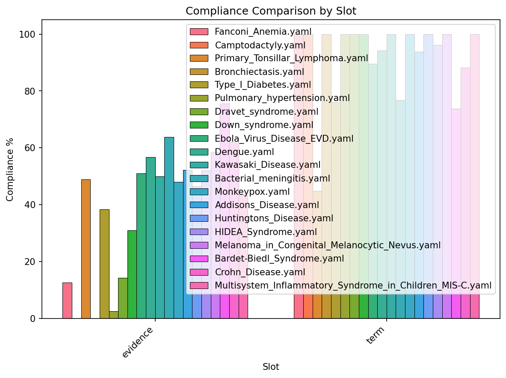
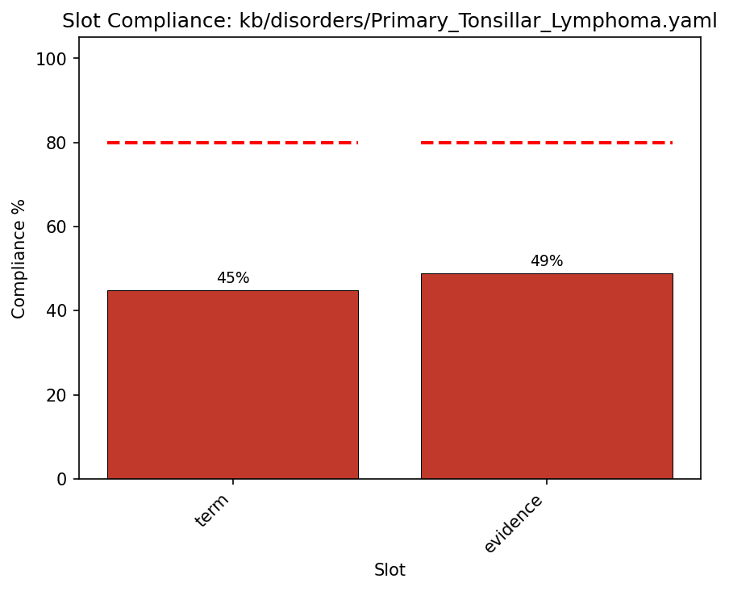
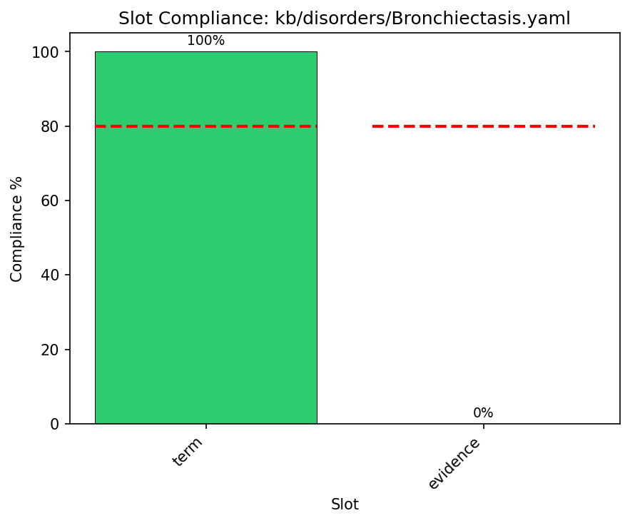
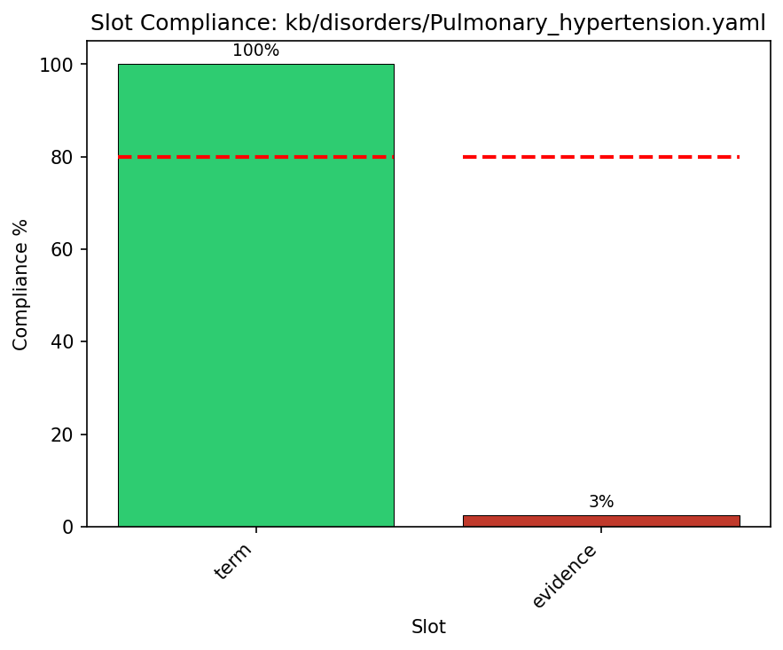
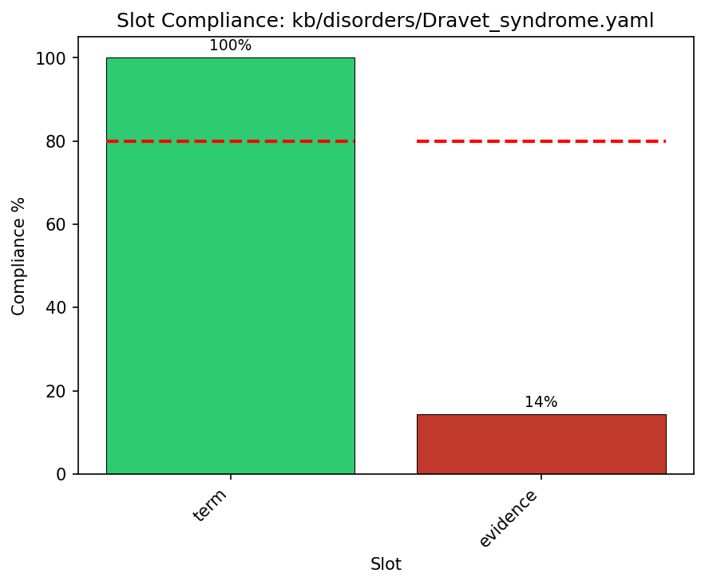
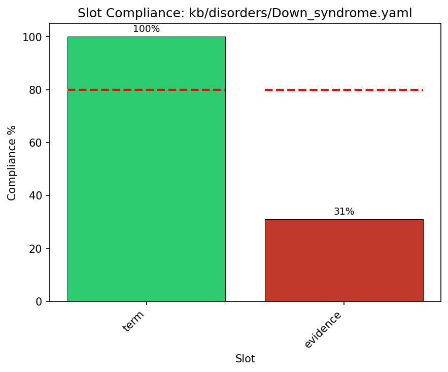
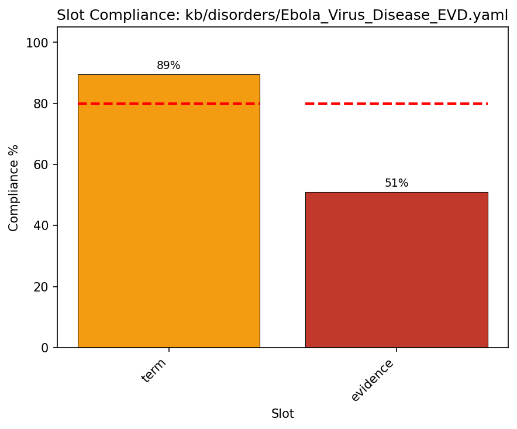
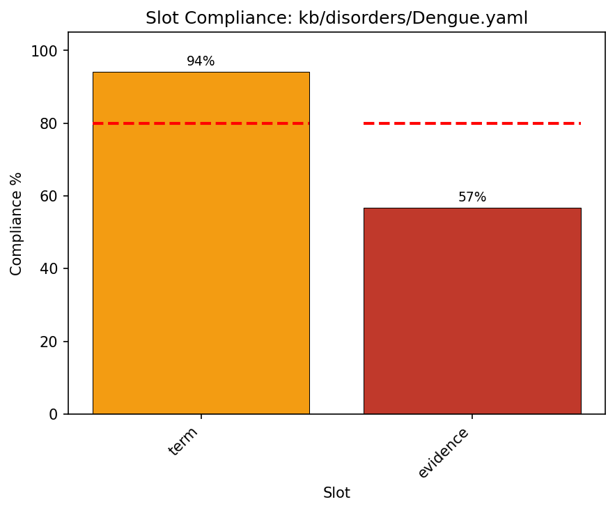

QC Dashboard - Multi-File Comparison
58 files analyzed (sorted by compliance, lowest first)
Files Analyzed
58
Average Compliance
75.9%
Total Checks
3458/4555
Total Violations
74
Slot Compliance Comparison
Priority Files - Detailed View
Showing the 10 files with lowest compliance for prioritized curation.
#1: Fanconi_Anemia.yaml (34.5%)

#2: Camptodactyly.yaml (36.5%)
#3: Primary_Tonsillar_Lymphoma.yaml (46.9%)
#4: Bronchiectasis.yaml (50.7%)
#5: Type_I_Diabetes.yaml (53.7%)

#6: Pulmonary_hypertension.yaml (54.8%)
#7: Dravet_syndrome.yaml (55.2%)
#8: Down_syndrome.yaml (60.0%)
#9: Ebola_Virus_Disease_EVD.yaml (67.0%)
#10: Dengue.yaml (70.1%)
All Files (Sorted by Priority)
Files with lowest compliance are listed first to prioritize curation efforts.
| File | Global | Weighted | Populated | Violations |
|---|---|---|---|---|
#1 Fanconi_Anemia.yaml |
34.5% | 42.8% | 29/84 | 1 |
#2 Camptodactyly.yaml |
36.5% | 46.7% | 19/52 | 1 |
#3 Primary_Tonsillar_Lymphoma.yaml |
46.9% | 49.5% | 45/96 | 4 |
#4 Bronchiectasis.yaml |
50.7% | 59.9% | 38/75 | 1 |
#5 Type_I_Diabetes.yaml |
53.7% | 60.9% | 66/123 | 6 |
#6 Pulmonary_hypertension.yaml |
54.8% | 64.1% | 46/84 | 1 |
#7 Dravet_syndrome.yaml |
55.2% | 65.7% | 37/67 | 1 |
#8 Down_syndrome.yaml |
60.0% | 68.7% | 30/50 | 1 |
#9 Ebola_Virus_Disease_EVD.yaml |
67.0% | 72.2% | 61/91 | 2 |
#10 Dengue.yaml |
70.1% | 75.1% | 136/194 | 2 |
Kawasaki_Disease.yaml |
70.6% | 77.1% | 60/85 | |
Bacterial_meningitis.yaml |
70.9% | 68.6% | 73/103 | 3 |
Monkeypox.yaml |
73.2% | 78.8% | 71/97 | 1 |
Addisons_Disease.yaml |
73.4% | 78.2% | 69/94 | 2 |
Huntingtons_Disease.yaml |
73.9% | 79.3% | 65/88 | 1 |
HIDEA_Syndrome.yaml |
74.5% | 80.8% | 38/51 | 2 |
Melanoma_in_Congenital_Melanocytic_Nevus.yaml |
74.6% | 78.0% | 44/59 | 1 |
Bardet-Biedl_Syndrome.yaml |
74.7% | 75.9% | 59/79 | 2 |
Crohn_Disease.yaml |
75.2% | 78.8% | 76/101 | 3 |
Multisystem_Inflammatory_Syndrome_in_Children_MIS-C.yaml |
76.1% | 81.5% | 83/109 | 1 |
Primary_Ciliary_Dyskinesia.yaml |
76.2% | 81.5% | 64/84 | |
Alhzeimer_Disease.yaml |
76.4% | 77.8% | 84/110 | 3 |
Klinefelter_Syndrome.yaml |
77.1% | 82.0% | 54/70 | 1 |
Nephronophthisis.yaml |
77.4% | 81.0% | 65/84 | 1 |
Hypertensive_Heart_Disease.yaml |
77.5% | 81.6% | 69/89 | 2 |
Systemic_Lupus_Erythematosus.yaml |
77.6% | 80.4% | 83/107 | 3 |
Graves_Disease.yaml |
77.7% | 82.7% | 73/94 | 2 |
Peroxisome_Biogenesis_Disorder.yaml |
78.3% | 81.8% | 72/92 | 2 |
Marfan_Syndrome.yaml |
78.8% | 82.8% | 63/80 | 1 |
Cholera.yaml |
78.9% | 82.0% | 105/133 | 1 |
Transient_Neonatal_Pustular_Melanosis.yaml |
79.5% | 85.0% | 35/44 | |
ATTR_Amyloidosis.yaml |
79.8% | 83.5% | 67/84 | 1 |
Vitiligo.yaml |
80.0% | 81.9% | 52/65 | 3 |
Chronic_Obstructive_Pulmonary_Disease.yaml |
80.2% | 83.7% | 97/121 | 1 |
Schizophrenia.yaml |
80.8% | 82.3% | 59/73 | 2 |
Acquired_Immunodeficiency_Syndrome.yaml |
81.1% | 84.6% | 43/53 | |
Pick_Disease.yaml |
82.5% | 85.3% | 52/63 | 2 |
Rheumatoid_Arthritis.yaml |
83.0% | 85.7% | 78/94 | 1 |
Ehlers-Danlos_Syndrome.yaml |
83.5% | 86.0% | 66/79 | 1 |
Asthma.yaml |
84.3% | 86.9% | 86/102 | 1 |
Familial_Mediterranean_Fever.yaml |
84.7% | 86.6% | 50/59 | 4 |
Hypertrophic_Cardiomyopathy.yaml |
85.1% | 88.0% | 74/87 | 1 |
Hirschsprung_Disease.yaml |
85.2% | 88.3% | 46/54 | |
Tuberculosis.yaml |
85.3% | 88.7% | 64/75 | 1 |
Glucose-6-Phosphate_Dehydrogenase_G6PD_Deficiency.yaml |
85.5% | 88.8% | 53/62 | |
Multiple_Sclerosis.yaml |
86.6% | 89.7% | 58/67 | |
Aromatase_Deficiency.yaml |
87.1% | 90.5% | 54/62 | |
Jeavons_Syndrome.yaml |
88.2% | 90.3% | 45/51 | |
Parvovirus_B19_Infection.yaml |
88.2% | 89.3% | 45/51 | 1 |
Ehlers-Danlos_Syndrome_COL5A1-related.yaml |
89.5% | 91.9% | 51/57 | |
Antiphospholipid_Syndrome.yaml |
89.8% | 91.9% | 44/49 | |
Non-Small_Cell_Lung_Cancer.yaml |
90.5% | 91.9% | 57/63 | 1 |
Lynch_Syndrome.yaml |
93.2% | 94.0% | 55/59 | 1 |
Hepatitis_B.yaml |
96.1% | 96.6% | 74/77 | |
Roifman-syndrome.yaml |
97.0% | 97.7% | 32/33 | |
Achoo_Syndrome.yaml |
97.6% | 98.1% | 40/41 | |
Axenfeld-Rieger_syndrome.yaml |
97.9% | 97.8% | 47/48 | 1 |
Myalgic_Encephalomyelitis_Chronic_Fatigue_Syndrome.yaml |
100.0% | 100.0% | 57/57 |